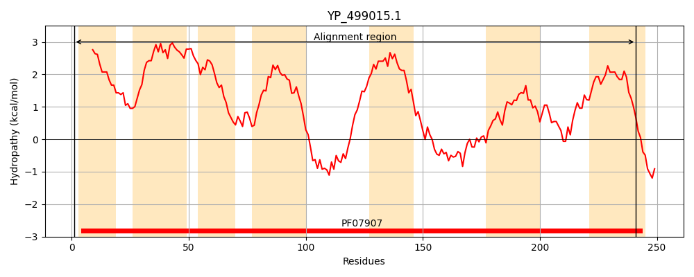
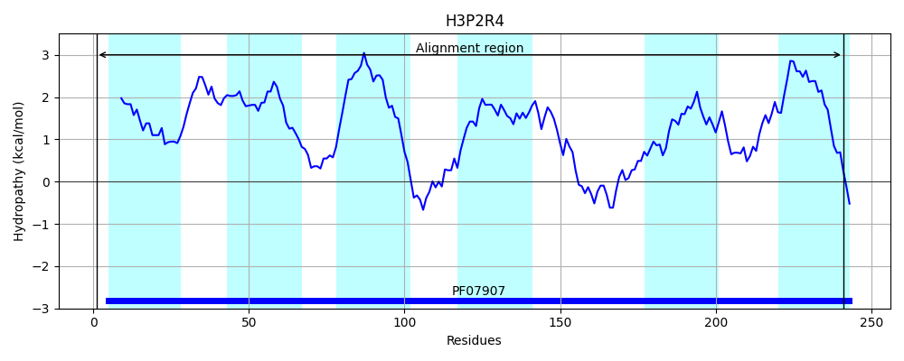
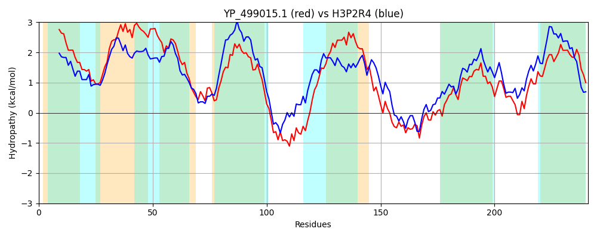

Hit Accession: H3P2R4
Hit TCID: 9.B.141.1.2
Hit Description: gnl|BL_ORD_ID|5075 gnl|TC-DB|H3P2R4|9.B.141.1.2 Hypothetical membrane protein, YibE/F family OS=Lactobacillus plantarum subsp. plantarum NC8 GN=nc8_0863 PE=4 SV=1
Mach Len: 241
e:0.000000
Query TMS Count : 7
Hit TMS Count: 6
TMS-Overlap Score: 6.200000
Predicted Substrates:None
BLAST Alignment:
Score: 420 , Bit scores: 166 bits, E-value: 9.2e-51, Alignment length: 241, Percentage identity: 34
Query: 1 MNAVFILALLLLFLMIIFGGKKGFISYLTLFLNFAILIISIVLIIFGVPIYVVTFFFCIIIGACNLFVLNSYNVKTQAAFISTIVTTILLITLIYLSVYFGHLQGFSTEQQDETYVYSMNIGIDMVQFMVFTIILAVIAAVIDLTITISSPIYELHQVNPTLTQYELFQSGMRVGREILATSANTIYLAFFGGQLALFIWFFKLKYSFGHIINSKIFAQEFISIILGGIAVAISIPITAWI 241
MN + +L L+LL LM + GGK G ++L+L NF +L +++VLI +G P V+ II A +F V + A+I+ ++ ++L+ +I+ + QGFS E ++ S+ IG+ + V IL+ + A+ + I I++ + E+ +P L L+ G+ +G++I+ T+ NT++ FFGG LALFIWF L YSFG +IN+KIF E + ++ I V + +P+T W+
Sbjct: 1 MNTITVLGLILLGLMTLIGGKTGATTFLSLLFNFGLLFLAVVLISWGFPAMGVSLVIGTIILAFTIFFGEDNEVAAKPAYIAALIVMVILVLIIFPVENWIMAQGFSLEDSEDLEGMSLAIGVSFIGVAVTEAILSTLGAIAEAAIAIAAGLSEILAQHPQLPTKRLYIDGISIGKQIIGTTFNTLFFGFFGGFLALFIWFAGLHYSFGSVINNKIFVAEVLMVLFSLIGVILVVPVTTWV 241 | Protein Hydropathy Plots: |
|---|
|  |  |
Pairwise Alignment-Hydropathy Plot:
|
|---|
|  |